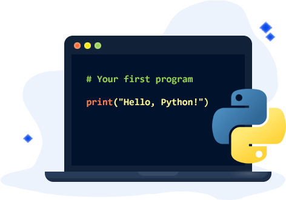
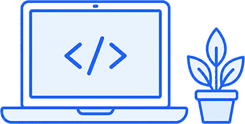

Python is a programming language that is easy for beginners to learn. This website will help you learn some basic Python skills step by step.
This website is for students aged 13-18 who are new to Python.
Start with Getting Started, then learn If/Else and Loops, and try the Quiz at the end.
